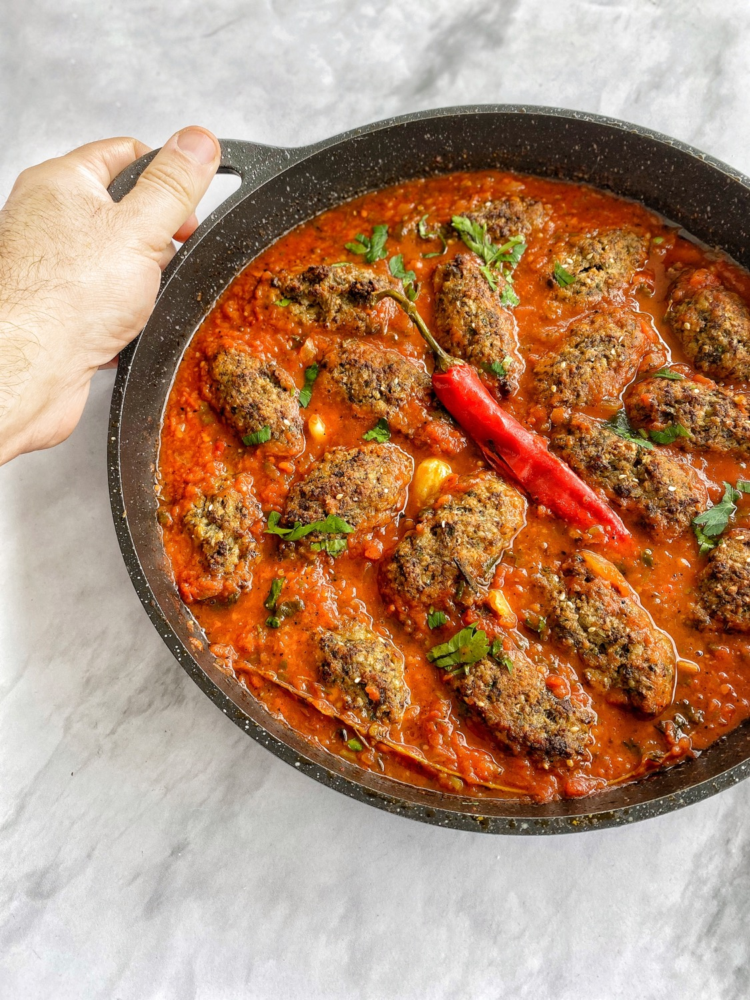

קציצות מרוקאיות (זהר)
1 ק”ג בשר טחון (זהר) + רב אל חנות

בשר
- בצל 1 גדול מגורד 1 - להוציא מים
- תפוח אדמה מגורד - להוציא מים
- כפית וחצי כל תבלין: פלפל , מלח, פפריקה מתוקה, רס אל חנות, פטרוזיליה חצי כוס, ביצה אחת, חצי כוס מים.
- לערבב עם בשר
- חצי שעה לנוח
- רוטב
רוטב
- 6 אגבניות בלי כליפה לגרד, לשים בסיר רחב, שתי כפות רסק מרוכז אגבניות, שוב 6 שיניים, מלח, פלפל, פפריקה מתוקה, פלפל חריף, כוסברה - פעם בהתחלה, פעם בסוף, מים (שיהיה סמיך), לבשל שעה בלי בשר - מכסה סגורה.
- להוסיף קציצות ברוטב רותח לעוד שעה: חצי שעה בלי מכסה, חצי מכוסה.
חזרה
למעלה